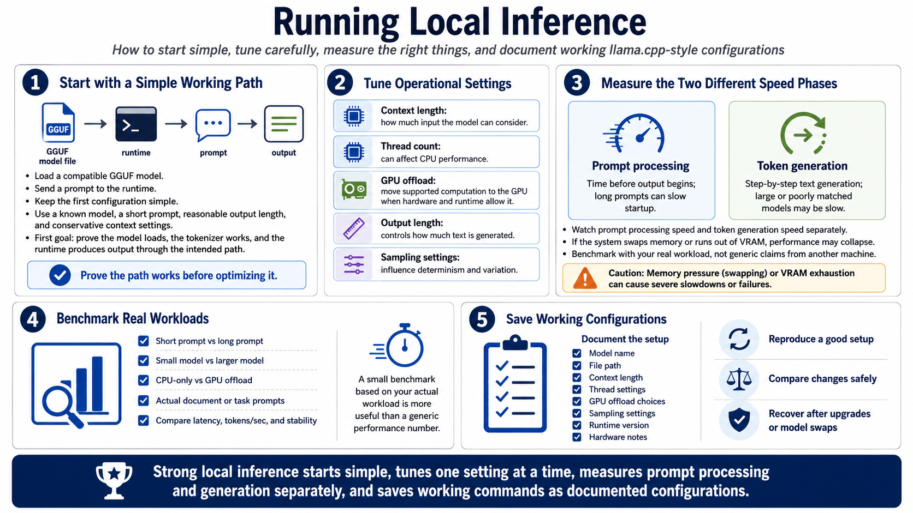

Running Local Inference
Connecting to LMS... Progress: in progress

Narration
Running local inference begins with loading a compatible GGUF model and sending a prompt to the runtime. At first, keep the configuration simple. Use a known model, a short prompt, a reasonable output length, and conservative context settings. The first goal is to prove that the model loads, the tokenizer works, and the runtime produces output through the path you intend to use.
After the basic path works, tune operational settings. Context length controls how much input the model can consider. Thread count can affect CPU performance. GPU offload can move supported model computation to the GPU when hardware and runtime configuration allow it. Output length controls how much text is generated. Sampling settings influence determinism and variation.
Observe prompt processing speed and token generation speed separately. A long prompt may take time before output begins. A large or poorly matched model may generate slowly. If the system swaps memory or runs out of VRAM, performance may collapse. A small benchmark based on your actual workload is more useful than a generic performance claim from a different machine.
Save working command examples as documented configurations, not hidden one-off experiments. Include model name, file path, context length, thread settings, GPU offload choices, sampling settings, runtime version, and hardware notes. That documentation lets you reproduce a good setup, compare changes, and recover when an upgrade or model swap causes unexpected behavior.